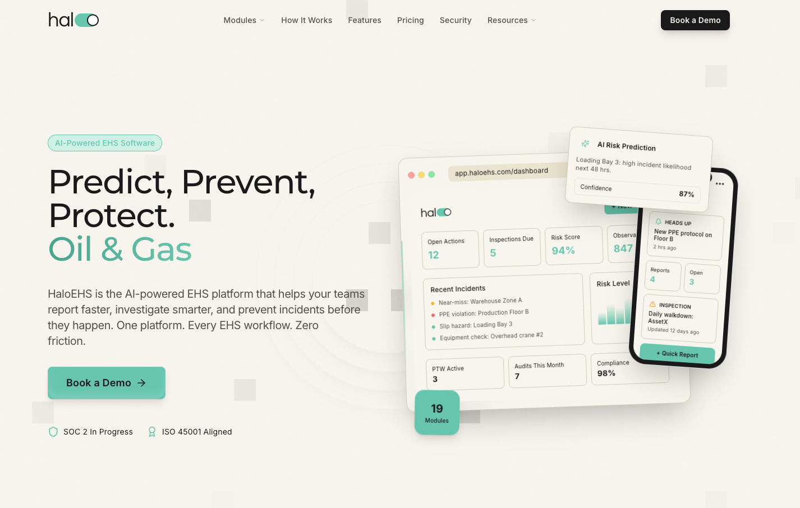
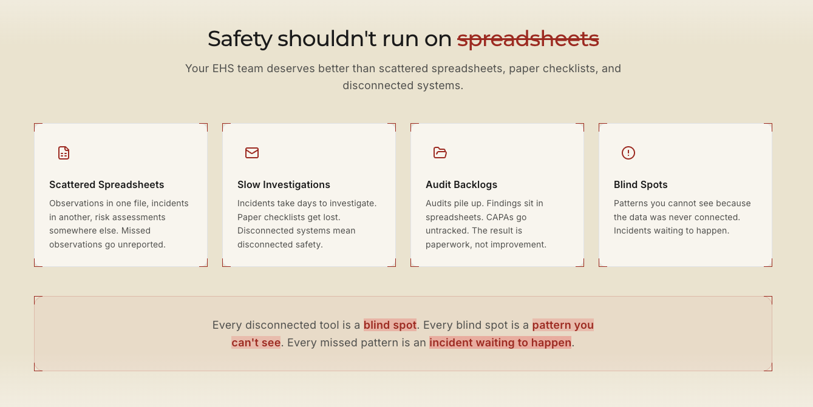
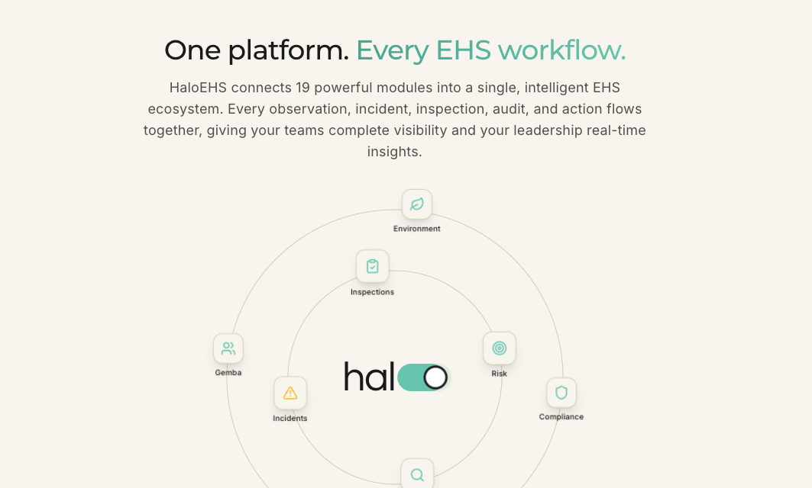
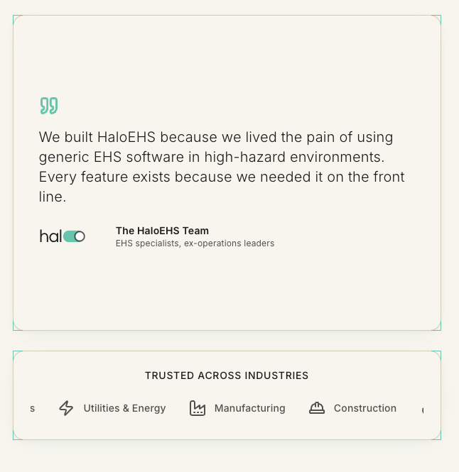
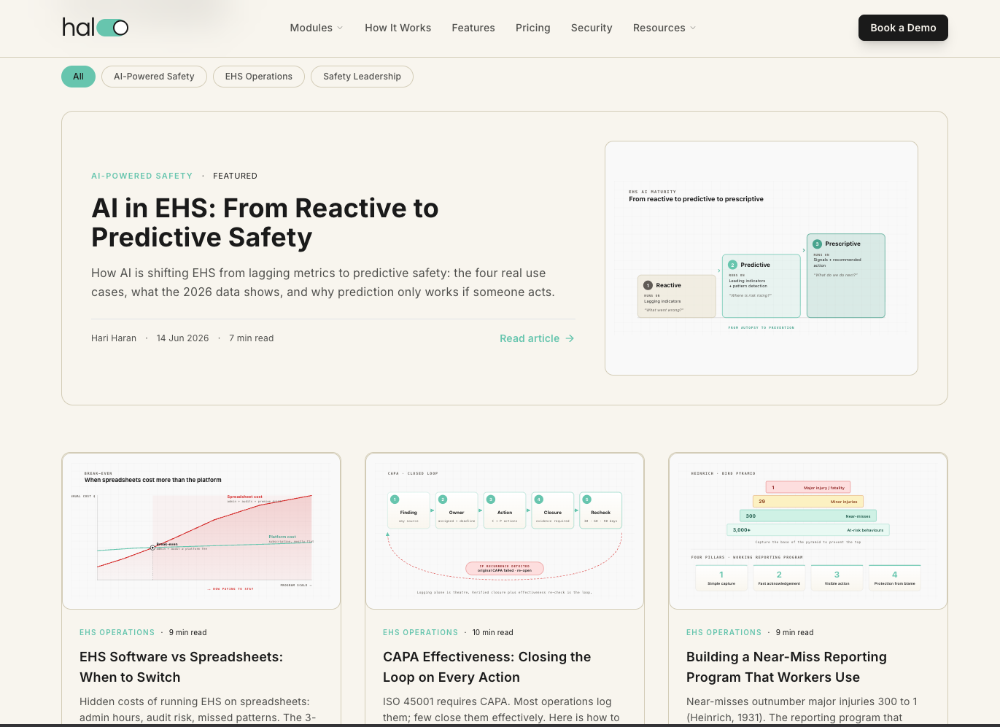
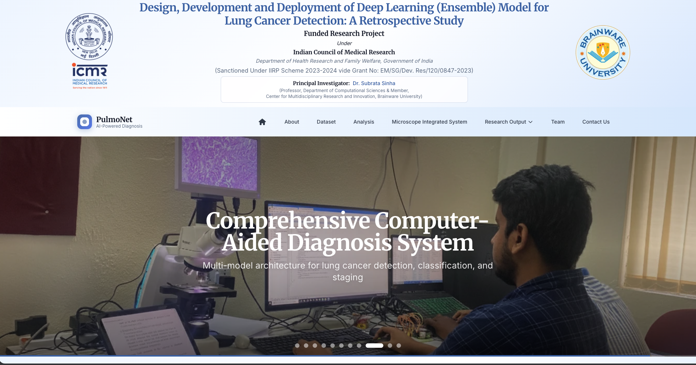
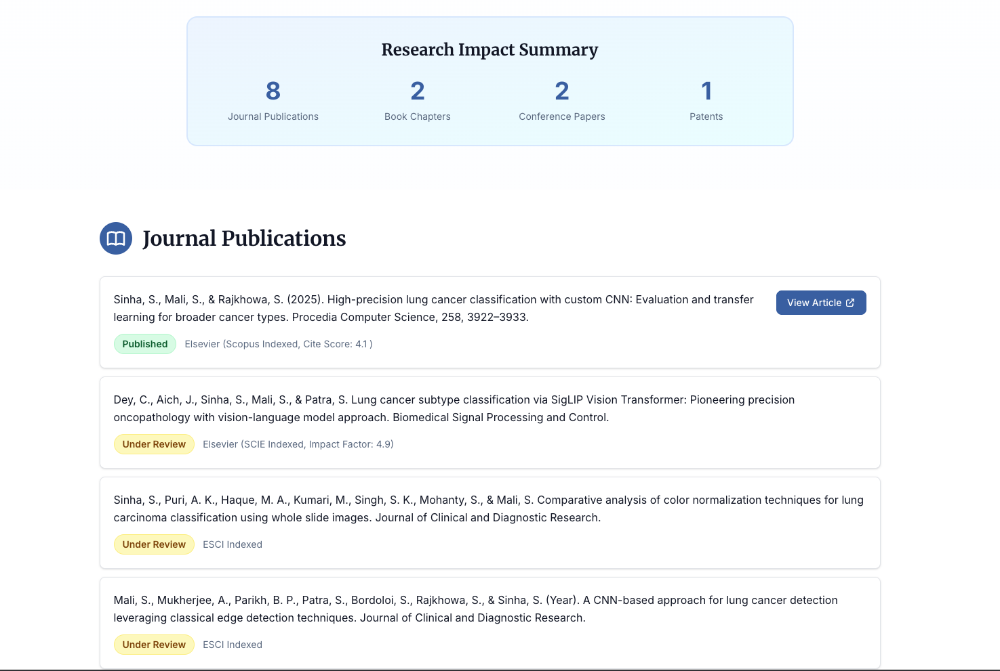
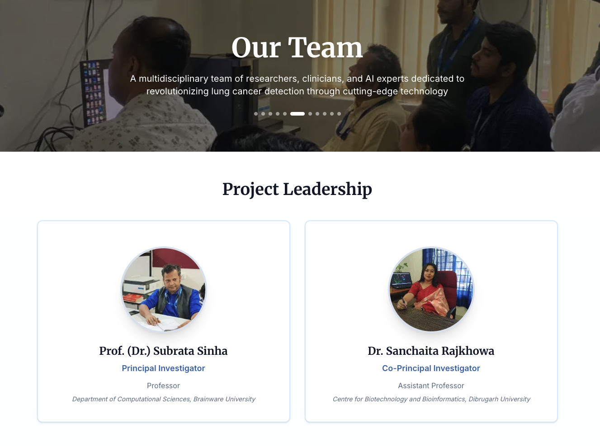
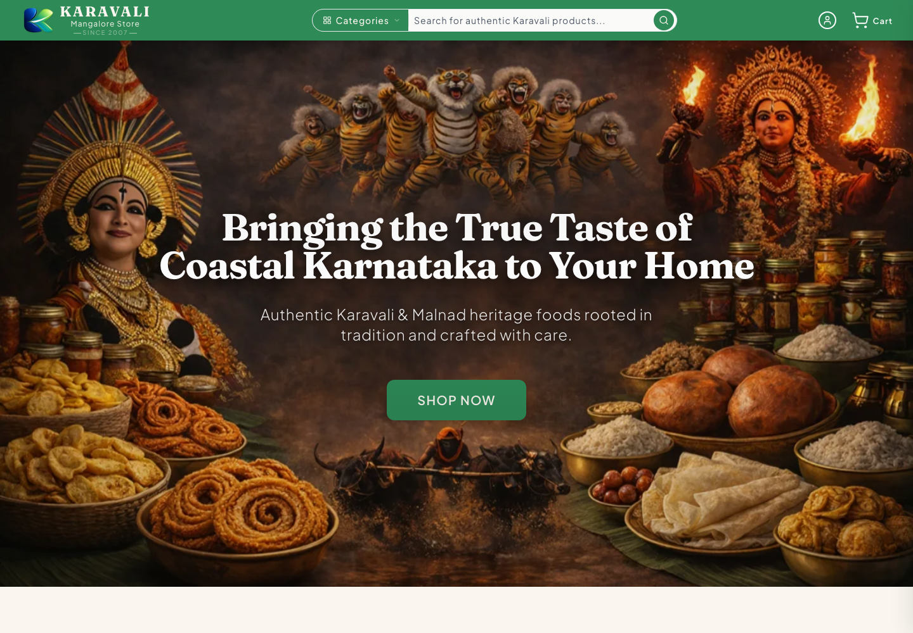

Design Engineer with production experience turning product ideas into polished,
user-facing web experiences. I've shipped full-stack products across startup, freelance,
research, and enterprise environments, owning both design decisions and engineering execution,
from landing pages and e-commerce platforms to clinician-facing AI applications.
Case Study
Case study · 01 · HALOSAFE
As a founding engineer at HaloSafe, I was responsible for the design and
development of HaloEHS. My focus was to bring a modern design language to the health,
safety, and environment (HSE) niche, a space that has traditionally favored conservative
B2B industrial design. The goal was a contemporary aesthetic that still feels restrained:
modern in execution, without losing the clarity and seriousness the domain demands.
(visit: haloehs.com)

haloehs.com · hero with real product UI and trust badges at the CTA

haloehs.com · problem section
The problem section
The warm red accent is the design decision. "Spreadsheets" is struck
through, and the escalating phrases (blind spot, pattern you can't see, incident
waiting to happen) are marked in the same alarm tone. The color carries the message:
it visualizes what traditional, spreadsheet-driven safety workflows cost, and frames
the move to a modern, connected approach.

haloehs.com · modules section

haloehs.com · card styling
Modules section
The platform is drawn as an orbit: 19 modules arranged in concentric
rings around the HaloEHS core, so "one platform, every workflow" is shown
structurally instead of listed.
Card styling
My idea was to keep the rounded corners of the cards while adding
edged corner marks, like a modern blueprint. The rounding keeps the interface soft
and approachable; the corner detailing adds an engineered, technical character that
suits the industrial domain.

haloehs.com/blog · featured article plus diagram-led cards
Blog system
Articles are authored in Markdown, and every diagram is built as
modern inline SVG instead of a raster image. Content stays fully crawlable and
indexable, diagrams remain sharp at any size, and the text inside them is
selectable. This content architecture maps directly onto the blog-readability
workstream in the Podman project.
As an R&D intern at ICMR, I was responsible for the end-to-end design
and development of the entire PulmoNet website.
(visit: pulmonet.in)

pulmonet.in · masthead, product nav, and carousel hero

pulmonet.in · research output

pulmonet.in · project leadership
Research output
The page opens with an impact summary (publications, chapters,
patents) and every publication card carries its indexing status, so academic
credibility is visible at a glance.
Team
Leadership is shown as named cards with portraits, roles, and
institutions. For a funded research project, the people are part of the proof.
Case studies · 03
Other work

karavalimangalorestore.com
Karavali Mangalore Store · Freelance
E-commerce for a family-run Mangalorean food brand, live with paying
customers. My role: end-to-end design and development. Cultural-heritage hero,
commerce-first header with categories, search and cart, and a "Since 2007"
provenance marker doing trust work.
A personal endeavour: a mobile app for tracking goals and
productivity. My role: end-to-end design and development, from the app interface
to the monochrome editorial landing page.
For the LFX mentorship project, I went through the objectives and
explored the podman.io codebase before designing anything. Below are the
design decisions for the open website issues: a dedicated downloads page,
shareable meeting-minutes pages, and readable blog presentation.
AI disclosure: Agentic harness tools like Codex/Cursor were used to generate these HTML mockups.